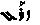

ADIM V: AŞK VE SABIR SEVGİYLE YAPTIĞIN SÜRECE HER ŞEYİN BİR ANLAMI VARDIR...
Ben insanların din diye birbirlerini yaktıkları, inanç adına birbirlerini öldürdükleri ve kişisel gelişim niyetiyle birbirlerini sömürdükleri sevgisi eksik bir dünyaya doğdum. Böylece, içinde sevgi olmayan inançların, içinde sevgi olmayan tekniklerin ve dinlerin, insanla varoluş arasında köprü kuramayacağını da öğrendim. İnsanların kumdan kalelerini, hayatları pahasına korudukları bir dünyada açtım gözlerimi, fakat böyle bir dünyada ölmeyeceğim...
Hedefin her ne olursa olsun, sana öğrettiklerimle bundan sonra yapacağın her şeyi, sevgiyle yapacağına dair bana söz vermelisin.
İçine kalbini koymadığın sürece öğrendiklerinle sadece tencere tava çalar gibi gürültü çıkarmayı başarır fakat bununla tatmin bulamazsın.
Yapabileceklerinle ve ortaya çıkan yeteneklerinle her neye ya da kime ellerini uzatıyorsan, her şeyden önce kalbinin sevgiyle attığından emin olmalısın.
Egzersizleri yapmadan önce öğrendiğin “Ki” enerjisinden anladığınla, ustalaştıkça hissettiklerin aynı şeyler olmayacak. Biri aşk hakkında konuşmak, diğeri aşkı yaşamaktır!
Bu yolculukta üç seviye vardır:
Bilen, deneyimleyen ve olan...
Sen artık bir deneyimleyensin! Ellerinde yaşamın enerjisini tutan, onu hisseden ve onunla gönlünce oynayıp şifalanansın...
Deneyimlerin arttıkça ustalaşacak, giderek ruhsal ivmeler kazanacaksın.
Ruhsal seviyen neye inandığınla ilgili değil,
bilinç seviyenle alakalıdır!
Bütün bu süreç içinde kalbin seninle birlikte adım atmıyorsa, öğrendiklerin ve yaptıkların “şifa” değildir! Sevgiden koptuğun noktada Allah adına, din adına, şifa adına, yüksek plan ve kozmos adına konuşmamalısın! Çünkü hiçbirinin zerresini anlamamışsındır henüz...
Her ne yaparsan yap yeteneklerini ve gücünü kullanırken “AŞK”a ait kal!
İnsanoğlu tarihin bütün çağlarında hep “AŞK” büyüsünün peşinden koşmuştur. En büyük yanılgısı da AŞK’ın iki kişi arasında olduğunu düşünmeleri olmuştur. Gerçek AŞK; iki kişi arasında olmaz. Sınırların kalktığı yerde AŞK ancak “BİR”de filizlenebilir.
Öğrendiklerini uygulamaya ve başkaları için de kullanmaya başladığında kendine seçilmiş kimlikler yaratıp olmadığın şeye bürünme çabasına girme lütfen. Kutsal bir kişinin enkarnesi olduğunu söyleyip üzerine giydiği beyazlarla kitleleri meditasyona sürükleyen, din adamı olduğunu iddia edip her türlü suiistimale alet olan ya da şifacıyım diyerek yeteneklerini başkalarını dolandırmak üzere kullananların yaptığı gibi içindeki varoluşu sevgisizliğinle aşağılama.
Unutma:
Sen varoluşun suretisin!
Yaratılmışların enkarnesi olman ya da olmaman, varlığına zerre anlam daha katmayacağı gibi bu aldatmacanın seni AŞK’tan uzaklaştıracağını, yanlışa ve tatminsizliğe sürükleyeceğini de bilmelisin.
“Varoluş AŞK’tır... AŞK zannettiğin şey değildir!”
Mevlana’yla, Hitler’le, Musa’yla, İsa’yla, Muhammet’le ve daha aklına gelen birçoklarıyla hepimiz aynı şeyiz aslında. Kimlikler arayıp uydurmak yerine aynaya baktığında gördüğün tek kimliğin AŞK’la yoğunlaşan varlığını kavradığında, başka kimliklerle, “sözde itibar” oluşturmak hevesine zaten ihtiyaç duymuyor olacaksın.
Kalbindeki yaratanla ortak bir yol istiyorsan ve kurban bilincinden kurtularak içindeki cehennemin ateşlerini söndürmek niyetindeysen, senin için elzem olan tek bir su vardır; o da “AŞK” suyudur.
Su hayattır! Onu kayaya dökersen israf edersin.
Toprağa dökersen can verirsin...
İçindeki sonsuz AŞK’ı nereye dökeceğini,
sevginin suyunu nereye akıtacağını bir kez daha düşün.
Şu ana kadar sana anlattığım ve öğretmeye çalıştığım tekniklerden dilediğini seç ve istediğin gibi alıp uygula! Tamamen özgürsün. Bu çalışmalarla başarman gereken tek şey, her ne yapıyor ve nasıl yapıyor olursan ol, yaptığın her şeyin içinde “sevgi” olabilmektir.
AŞK yolculuğunda hedef aynıdır ancak adımlar hep farklıdır!
Kimi zaman sözlerle, kimi zaman egzersizlerle,
kimi zaman müzikle ya da sanatla ama hep AŞK’la...
– Peki! Ya bu gösterdiğin tekniklerin AŞK’la ne ilgisi var?
– Zihnini kaybetmeden, kalbinin sesini duyabilmeyi mi bekliyorsun sen? İçindeki kurbanı kurban etmeden kalbindeki yaratanı nasıl özgür bırakabilirsin ki?
Kalbini dahil etmediğin, AŞK’la buluşmadığın teknikler, egzersizler, öğretiler, inançlar ya da dinler seninle yaratan arasında köprü olmaya kâfi gelmeyecektir. Günlerce hatta aylarca bu egzersizleri uygulayıp gelişerek “mastır” olmayı başarsan da, kalbinin olmadığı yer AŞK’a susamaya ve giderek kuraklaşmaya mahkûmdur!
Öfke, korku ve nefretle dolu insanların yetenekleri ve içsel güçleri sadece cehennem yaratır!
Kalbinde AŞK olup da attığın her adım “şifa”dır.
“Şifa” denen şeyin mekanik bir söylem olmadığını anladığında hayatında çok şeyin değişeceğini biliyorum.
Korkuyla ve nefretle dolu olan kalbini binlerce teknik ve egzersizle eğitsen bile, yazık ki yaşamın boyunca kırılmaya, kızmaya ve ağlamaya devam edersin.
Benim bildiğim kalp can verir.
Benim bildiğim kalp her atımda şifa taşır bütün varlığınla...
AŞKLA
Bir gün yoldaşları Musa Peygamber’e gelerek kendisini dağlardan aşağıya yuvarlayıp yaralayan ve bu yaptığı şeyin de ibadet olduğunu söyleyerek varoluşa ulaşmaya çalışan bir adamdan söz ederler. Musa Peygamber de anlatılan adamı, kendisini yerden yere vurmaktan kan revan içinde bulur ve ona ne yaptığını sorar. Adam varoluşa ulaşmak üzere ibadet ettiğini açıklayınca Musa Peygamber cebinden çıkardığı bir deri parçasının üzerine dualar yazıp adama vererek, ona kendisine zarar vermeden yapabileceği yeni bir ibadet şekli teklif eder. Durumdan hayli memnun olan adam dua kâğıdını sevinçle eline alıp gider. Musa Peygamber de kendi yoluna dönmüş gidiyordur ki birinin arkasından seslendiğini duyup geri döner ve bakar. Biraz önce dua yazıp verdiği adam suyun üzerinden koşarak kendisine doğru gelir ve “Musa Peygamber bu yazdığın duaları ne sıklıkla okumalıyım?” diye sorar. Gördüğü şeyden etkilenen Musa Peygamber verdiği duaları adamın elinden geri alır ve “Sen dilediğin gibi yine aynı aşkla ibadetlerine devam et” der...
Bu hikâyenin de işaret ettiği gibi AŞK’la yaptığın her şey, ait olduğu yeri bulacaktır!
Bugüne kadar sadece tek bir tapınak inşa edildi: EVREN!
Gerisini hep biz insanlar inşa ettik!
Her ırk, her dil ve her din; aşkın kalesidir fakat AŞK’ın ırkı, dili, dini olmaz. Varoluşu anlamak istiyorsan, ayrımcılık yapmadan bütüne âşık olabilmelisin.
Yapacağın egzersizleri keyifle, gülümseyerek ve bütün kalbini ortaya koyarak yaparsan, farkı yaratabilirsin.
Günümüzde binlerce kişisel gelişim kurslarına, eğitim seminerlerine, dünyaca ünlü ustalara ve milyonlarca kitaba rağmen insanların arzuladıkları değişimi yaratamamalarının nedeni “AŞK”tan muaf kalmalarıdır.
Benim eğitimlerimde değişimi yakalayan 50 bin kişinin, sadece öğrettiğim tekniklerle bunu başardıklarını söyleyemem. Değişimi başlatan şey tekniğin kendisi değil, egzersizlerin içine koyduğun “AŞK”tır...
“AŞK”ın başladığı nokta “HİÇ”liktir...
HİÇLİK
Anadolu’nun küçük ve güzel köylerinden birinde, delikanlının biri hakikat yolculuğuna çıkmaya karar verir ve bu amacını ailesine anlatır. Oğullarını en yakın köydeki dergâha götürmeye karar veren aile, hakikat yolculuğunu her ne kadar onaylayıp sevinseler de oğullarından ayrı kalacakları için üzgündürler. Delikanlının annesi, oğlu henüz dergâha teslim olmadığı halde şimdiden pencerenin önünde iç geçirip hasret çekmeye başlamıştır.
Delikanlı, dergâha kabulünü beklerken zamanının çoğunu birlikte büyüdüğü köpeğiyle oyun oynayarak geçirmektedir. Köpeğiyle onun arasında her zaman çok güçlü bir sevgi ve bağlılık vardı. Çocukluğundan beri onu anlayan, dinleyen, yargılamadan seven köpeğinden ayrılmak delikanlı için de hiç kolay değildir.
Gel zaman git zaman dergâha kabul edilen ve artık o ailenin bir parçası olarak vazifelendirilen derviş, hocasının bir dediğini iki etmez, ne derse harfiyen yerine getirir ve sadakatle hakikat yolunda terbiye edilirmiş.
Aradan birkaç sene geçer ve çocuk yaşlarda girdiği dergâhta yaptığı zikirlerle ve nefes çalışmalarıyla su gibi berrak bir zihne sahip olan derviş, çocukluğundan beri yanından ayırmadığı biricik köpeğinin çoktan öldüğü haberini alır.
Hocası, öğrencisinin geçtiği tekâmül sürecini iyi bildiğinden, bir gün derste herkese “Allah” adıyla zikir çekme ödevi verir. Dersin sonundaysa köpeğinin ölümüyle sarsılan dervişi yanına çağırıp “Evlat! Seni en çok mutlu eden ve en çok aşka yaklaştıran şey nedir?” diye sorar. Derviş de hiç düşünmeden “Köpeğimi çok severdim hocam. Ben ona koşulsuz bir sevgiyle bağlıydım” diyerek cevap verir. Hoca da aldığı bu cevabın üzerine “O halde sen verdiğim zikir ödevinde köpeğinin adını geçireceksin” der.
Derviş, hocasının ne amaçla kendisine böyle bir ayrıcalık tanıdığını anlamasa da hocasına güveni ve sevgisi tamdır.
Ödevine, aynen hocasının tavsiye ettiği şekilde başlar. Aradan haftalar geçmiştir ki, hoca dergâhın koridorlarında yürürken dervişin bulunduğu odanın kapısından içeri göz atar ve öğrencisinin köpek gibi dört ayak üzerinde durmuş bir halde, dili dışarıda zikir çekmekte olduğunu görür.
Hemen diğer öğrencilerini yanına çağıran ve zikir çeken dervişin halini öğrencilerine gizlice izlettiren hoca; dergâhın diğer yolcularına hayatları boyunca unutamayacakları bir ders verir:
“Bakın evlatlarım. Sizler her biriniz Allah’ın adıyla haftalardır zikir çekiyorsunuz ama buna rağmen henüz Allah’ın ne olduğuna dair en ufak bir fikriniz yok. Bir de şu dervişin haline bakın. Köpeğinin adıyla zikir çekerken bile benliğini yitiriyor, hatta köpeğin kendisi oluyor. Ona aşkla bağlanıyor. Kimliği eriyor. Tam bir hiçliğe dönüşüyor. İşte evlatlarım; zikir böyle çekilir! Ruhuna geçirdiğin kılıfı soyunup çıkarmadığın sürece, o kılıf seni boğacaktır. Sonsuz olanı, sonlu bir kılıfta hapsettiğinde yazık ki sen de sonlu olanın ötesine geçemez, sonsuzluğu idrak edemezsin. Kap olup aşkı hapsedeceğine; hiç olup onu özgür bırakmayı öğrenmelisin. Allah’la buluşmak ancak hiçlikte mümkündür...”
“AŞK’ın doğumu, ancak âşığın ölümüyle mümkündür!”
“İnsanagüven” çatısı altında verdiğim eğitimler bundan beş yıl önce, sektörün ustaları tarafından ağır eleştiriler almıştı. “Bizlerin onlarca yıldır yaptığı ve uyguladığı teknikleri başkalarına sekiz haftada nasıl öğretebilirsin?” diyen Spiritüel hocalar, yaptığım şeyin imkânsız olduğunu iddia ederken ben onlara sadece şunu söyledim: “Sizin bakıp da çırak olarak gördüğünüz insanlarda, ben birer usta görüyorum.”
Karanlıkta etrafını görebilmek için gözbebeklerin büyür.
Kendi içindeki karanlıkta ışık görebilmen içinse gönlünün büyümesi gerekir!
O halde, senin için de uyanma zamanı geldi!
Biliyorum uykuda sıcak ve güvendesin ama artık gözlerini aç!
Senin konfor alanının dışında koskoca bir yaşam daha var...
– Metin senin mesleğin nedir?
– Ben basit bir temizlikçiyim. Kalbinin tozunu alıyorum.
Hakikat, o tozların altında yatıyor.